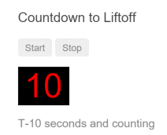

父传子 HeroChildComponent 有两个**输入型属性** ，它们通常带@Input 装饰器。
/src/app/hero-child.component.ts:
1 2 3 4 5 6 7 8 9 10 11 12 13 14 15 import { Component, Input } from '@angular/core' ;import { Hero } from './hero' ;@Component ({ selector: 'app-hero-child' , template: ` <h3>{{hero.name}} says:</h3> <p>I, {{hero.name}}, am at your service, {{masterName}}.</p> ` }) export class HeroChildComponent { @Input () hero: Hero; @Input ('master' ) masterName: string ; }
第二个 @Input 为子组件的属性名 masterName 指定一个别名 master。（不推荐取别名）
父组件 HeroParentComponent 把子组件的 HeroChildComponent 放到 *ngFor 循环器中，把自己的 master 字符串属性绑定到子组件的 master 别名上，并把每个循环的 hero 实例绑定到子组件的 hero 属性：
/src/app/hero-parent.component.ts
1 2 3 4 5 6 7 8 9 10 11 12 13 14 15 16 17 18 import { Component } from '@angular/core' ;import { HEROES } from './hero' ;@Component ({ selector: 'app-hero-parent' , template: ` <h2>{{master}} controls {{heroes.length}} heroes</h2> <app-hero-child *ngFor="let hero of heroes" [hero]="hero" [master]="master"> </app-hero-child> ` }) export class HeroParentComponent { heroes = HEROES; master = 'Master' ; }
运行应用程序会显示三个英雄：
通过 setter 截听输入属性值的变化 使用一个输入属性的 setter，以拦截父组件中值的变化，并采取行动。
子组件 NameChildComponent 的输入属性 name 上的这个 setter，会 trim 掉名字里的空格，并把空值替换成默认字符串。
/src/app/name-child.component.ts：
1 2 3 4 5 6 7 8 9 10 11 12 13 14 15 16 import { Component, Input } from '@angular/core' ;@Component ({ selector: 'app-name-child' , template: '<h3>"{{name}}"</h3>' }) export class NameChildComponent { private _name = '' ; @Input () set name(name: string ) { this ._name = (name && name.trim()) || '<no name set>' ; } get name(): string { return this ._name; } }
下面的 NameParentComponent 展示了各种名字的处理方式，包括一个全是空格的名字:
/src/app/name-parent.component.ts：
1 2 3 4 5 6 7 8 9 10 11 12 13 import { Component } from '@angular/core' ;@Component ({ selector: 'app-name-parent' , template: ` <h2>Master controls {{names.length}} names</h2> <app-name-child *ngFor="let name of names" [name]="name"></app-name-child> ` }) export class NameParentComponent { names = ['Dr IQ' , ' ' , ' Bombasto ' ]; }
通过*ngOnChanges()*来截听输入属性值的变化 使用 OnChanges 生命周期钩子接口的 ngOnChanges() 方法来监测输入属性值的变化并做出回应。
这个 VersionChildComponent 会监测输入属性 major 和 minor 的变化，并把这些变化编写成日志以报告这些变化。
src/app/version-child.component.ts：
1 2 3 4 5 6 7 8 9 10 11 12 13 14 15 16 17 18 19 20 21 22 23 24 25 26 27 28 29 30 31 32 import { Component, Input, OnChanges, SimpleChange } from '@angular/core' ;@Component ({ selector: 'app-version-child' , template: ` <h3>Version {{major}}.{{minor}}</h3> <h4>Change log:</h4> <ul> <li *ngFor="let change of changeLog">{{change}}</li> </ul> ` }) export class VersionChildComponent implements OnChanges { @Input () major: number ; @Input () minor: number ; changeLog: string [] = []; ngOnChanges(changes: {[propKey: string ]: SimpleChange}) { let log: string [] = []; for (let propName in changes) { let changedProp = changes[propName]; let to = JSON .stringify(changedProp.currentValue); if (changedProp.isFirstChange()) { log.push(`Initial value of ${propName} set to ${to} ` ); } else { let from = JSON .stringify(changedProp.previousValue); log.push(`${propName} changed from ${from } to ${to} ` ); } } this .changeLog.push(log.join(', ' )); } }
VersionParentComponent 提供 minor 和 major 值，把修改它们值的方法绑定到按钮上。
src/app/version-parent.component.ts：
1 2 3 4 5 6 7 8 9 10 11 12 13 14 15 16 17 18 19 20 21 22 23 24 import { Component } from '@angular/core' ;@Component ({ selector: 'app-version-parent' , template: ` <h2>Source code version</h2> <button (click)="newMinor()">New minor version</button> <button (click)="newMajor()">New major version</button> <app-version-child [major]="major" [minor]="minor"></app-version-child> ` }) export class VersionParentComponent { major = 1 ; minor = 23 ; newMinor() { this .minor++; } newMajor() { this .major++; this .minor = 0 ; } }
下面是点击按钮的结果。
子传父 父组件监听子组件的事件 子组件暴露一个 EventEmitter 属性，当事件发生时，子组件利用该属性 emits(向上弹射)事件。父组件绑定到这个事件属性，并在事件发生时作出回应。
子组件的 EventEmitter 属性是一个输出属性 ，通常带有@Output 装饰器 ，就像在 VoterComponent 中看到的。
/src/app/voter.component.ts
1 2 3 4 5 6 7 8 9 10 11 12 13 14 15 16 17 18 19 20 import { Component, EventEmitter, Input, Output } from '@angular/core' ;@Component ({ selector: 'app-voter' , template: ` <h4>{{name}}</h4> <button (click)="vote(true)" [disabled]="didVote">Agree</button> <button (click)="vote(false)" [disabled]="didVote">Disagree</button> ` }) export class VoterComponent { @Input () name: string ; @Output () voted = new EventEmitter<boolean >(); didVote = false ; vote(agreed: boolean ) { this .voted.emit(agreed); this .didVote = true ; } }
点击按钮会触发 true 或 false(布尔型有效载荷 )的事件。
父组件 VoteTakerComponent 绑定了一个事件处理器(onVoted())，用来响应子组件的事件($event)并更新一个计数器。
1 2 3 4 5 6 7 8 9 10 11 12 13 14 15 16 17 18 19 20 21 22 import { Component } from '@angular/core' ;@Component ({ selector: 'app-vote-taker' , template: ` <h2>Should mankind colonize the Universe?</h2> <h3>Agree: {{agreed}}, Disagree: {{disagreed}}</h3> <app-voter *ngFor="let voter of voters" [name]="voter" (voted)="onVoted($event)"> </app-voter> ` }) export class VoteTakerComponent { agreed = 0 ; disagreed = 0 ; voters = ['Narco' , 'Celeritas' , 'Bombasto' ]; onVoted(agreed: boolean ) { agreed ? this .agreed++ : this .disagreed++; } }
本框架把事件参数(用 $event 表示)传给事件处理方法，该方法会处理它：
父组件与子组件通过本地变量 互动 父组件不能使用数据绑定来读取子组件的属性或调用子组件的方法。但可以在父组件模板里，新建一个本地变量来代表子组件，然后利用这个变量来读取子组件的属性和调用子组件的方法，如下例所示。
子组件 CountdownTimerComponent 进行倒计时，归零时发射一个导弹。start 和 stop 方法负责控制时钟并在模板里显示倒计时的状态信息。
/src/app/countdown-timer.component.ts
1 2 3 4 5 6 7 8 9 10 11 12 13 14 15 16 17 18 19 20 21 22 23 24 25 26 27 28 29 30 31 32 33 34 35 36 import { Component, OnDestroy, OnInit } from '@angular/core' ;@Component ({ selector: 'app-countdown-timer' , template: '<p>{{message}}</p>' }) export class CountdownTimerComponent implements OnInit, OnDestroy { intervalId = 0 ; message = '' ; seconds = 11 ; clearTimer() { clearInterval (this .intervalId); } ngOnInit() { this .start(); } ngOnDestroy() { this .clearTimer(); } start() { this .countDown(); } stop() { this .clearTimer(); this .message = `Holding at T-${this .seconds} seconds` ; } private countDown() { this .clearTimer(); this .intervalId = window .setInterval(() => { this .seconds -= 1 ; if (this .seconds === 0 ) { this .message = 'Blast off!' ; } else { if (this .seconds < 0 ) { this .seconds = 10 ; } this .message = `T-${this .seconds} seconds and counting` ; } }, 1000 ); } }
计时器组件的宿主组件 CountdownLocalVarParentComponent 如下：
/src/app/countdown-parent.component.ts
1 2 3 4 5 6 7 8 9 10 11 12 13 14 15 import { Component } from '@angular/core' ;import { CountdownTimerComponent } from './countdown-timer.component' ;@Component ({ selector: 'app-countdown-parent-lv' , template: ` <h3>Countdown to Liftoff (via local variable)</h3> <button (click)="timer.start()">Start</button> <button (click)="timer.stop()">Stop</button> <div class="seconds">{{timer.seconds}}</div> <app-countdown-timer #timer></app-countdown-timer> ` , styleUrls: ['../assets/demo.css' ] }) export class CountdownLocalVarParentComponent { }
父组件不能通过数据绑定使用子组件的 start 和 stop 方法，也不能访问子组件的 seconds 属性。
把本地变量(#timer)放到(<countdown-timer>)标签中，用来代表子组件。这样父组件的模板就得到了子组件的引用，于是可以在父组件的模板中访问子组件的所有属性和方法。
这个例子把父组件的按钮绑定到子组件的 start 和 stop 方法，并用插值来显示子组件的 seconds 属性。
下面是父组件和子组件一起工作时的效果。

父组件调用*@ViewChild()* 本地变量 方法是个简单便利的方法。但是它也有局限性，因为父组件-子组件的连接必须全部在父组件的模板中进行。父组件本身的代码对子组件没有访问权。
如果父组件的类 需要读取子组件的属性值或调用子组件的方法，就不能使用本地变量 方法。
当父组件类 需要这种访问时，可以把子组件作为 ViewChild ，*注入* 到父组件里面。
下面是父组件 CountdownViewChildParentComponent:
1 2 3 4 5 6 7 8 9 10 11 12 13 14 15 16 17 18 19 20 21 22 23 24 25 26 27 28 29 30 31 32 import { AfterViewInit, ViewChild } from '@angular/core' ;import { Component } from '@angular/core' ;import { CountdownTimerComponent } from './countdown-timer.component' ;@Component ({ selector: 'app-countdown-parent-vc' , template: ` <h3>Countdown to Liftoff (via ViewChild)</h3> <button (click)="start()">Start</button> <button (click)="stop()">Stop</button> <div class="seconds">{{ seconds() }}</div> <app-countdown-timer></app-countdown-timer> ` , styleUrls: ['../assets/demo.css' ] }) export class CountdownViewChildParentComponent implements AfterViewInit { @ViewChild (CountdownTimerComponent) private timerComponent: CountdownTimerComponent; seconds() { return 0 ; } ngAfterViewInit() { setTimeout (() => this .seconds = () => this .timerComponent.seconds, 0 ); } start() { this .timerComponent.start(); } stop() { this .timerComponent.stop(); } }
把子组件的视图插入到父组件类需要做一点额外的工作。
首先，你必须导入对装饰器 ViewChild 以及生命周期钩子 AfterViewInit 的引用。
接着，通过 @ViewChild 属性装饰器，将子组件 CountdownTimerComponent 注入到私有属性 timerComponent 里面。
组件元数据里就不再需要 #timer 本地变量了。而是把按钮绑定到父组件自己的 start 和 stop 方法，使用父组件的 seconds 方法的插值来展示秒数变化。
这些方法可以直接访问被注入的计时器组件。
ngAfterViewInit() 生命周期钩子是非常重要的一步。被注入的计时器组件只有在 Angular 显示了父组件视图之后才能访问，所以它先把秒数显示为 0.
然后 Angular 会调用 ngAfterViewInit 生命周期钩子，但这时候再更新父组件视图的倒计时就已经太晚了。Angular 的单向数据流规则会阻止在同一个周期内更新父组件视图。应用在显示秒数之前会被迫再等一轮 。
使用 setTimeout() 来等下一轮，然后改写 seconds() 方法，这样它接下来就会从注入的这个计时器组件里获取秒数的值。
父组件和子组件通过服务来双向通讯 父组件和它的子组件共享同一个服务，利用该服务在组件家族内部 实现双向通讯。
该服务实例的作用域被限制在父组件和其子组件内。这个组件子树之外的组件将无法访问该服务或者与它们通讯。
这个 MissionService 把 MissionControlComponent 和多个 AstronautComponent 子组件连接起来。
src/app/mission.service.ts
1 2 3 4 5 6 7 8 9 10 11 12 13 14 15 16 17 18 19 20 21 22 23 import { Injectable } from '@angular/core' ;import { Subject } from 'rxjs' ;@Injectable ()export class MissionService { private missionAnnouncedSource = new Subject<string >(); private missionConfirmedSource = new Subject<string >(); missionAnnounced$ = this .missionAnnouncedSource.asObservable(); missionConfirmed$ = this .missionConfirmedSource.asObservable(); announceMission(mission: string ) { this .missionAnnouncedSource.next(mission); } confirmMission(astronaut: string ) { this .missionConfirmedSource.next(astronaut); } }
MissionControlComponent 提供服务的实例，并将其共享给它的子组件(通过 providers 元数据数组)，子组件可以通过构造函数将该实例注入到自身。
/src/app/missioncontrol.component.ts
1 2 3 4 5 6 7 8 9 10 11 12 13 14 15 16 17 18 19 20 21 22 23 24 25 26 27 28 29 30 31 32 33 34 35 36 37 38 39 40 41 import { Component } from '@angular/core'; import { MissionService } from './mission.service'; @Component({ selector: 'app-mission-control', template: ` <h2>Mission Control</h2> <button (click)="announce()">Announce mission</button> <app-astronaut *ngFor="let astronaut of astronauts" [astronaut]="astronaut"> </app-astronaut> <h3>History</h3> <ul> <li *ngFor="let event of history">{{event}}</li> </ul> `, providers: [MissionService] }) export class MissionControlComponent { astronauts = ['Lovell', 'Swigert', 'Haise']; history: string[] = []; missions = ['Fly to the moon!', 'Fly to mars!', 'Fly to Vegas!']; nextMission = 0; constructor(private missionService: MissionService) { missionService.missionConfirmed$.subscribe( astronaut => { this.history.push(`${astronaut} confirmed the mission`); }); } announce() { let mission = this.missions[this.nextMission++]; this.missionService.announceMission(mission); this.history.push(`Mission "${mission}" announced`); if (this.nextMission >= this.missions.length) { this.nextMission = 0; } } }
AstronautComponent 也通过自己的构造函数注入该服务。由于每个 AstronautComponent 都是 MissionControlComponent 的子组件，所以它们获取到的也是父组件的这个服务实例。
1 2 3 4 5 6 7 8 9 10 11 12 13 14 15 16 17 18 19 20 21 22 23 24 25 26 27 28 29 30 31 32 33 34 35 36 37 38 39 40 41 42 43 44 import { Component, Input, OnDestroy } from '@angular/core' ;import { MissionService } from './mission.service' ;import { Subscription } from 'rxjs' ;@Component ({ selector: 'app-astronaut' , template: ` <p> {{astronaut}}: <strong>{{mission}}</strong> <button (click)="confirm()" [disabled]="!announced || confirmed"> Confirm </button> </p> ` }) export class AstronautComponent implements OnDestroy { @Input () astronaut: string ; mission = '<no mission announced>' ; confirmed = false ; announced = false ; subscription: Subscription; constructor (private missionService: MissionService this .subscription = missionService.missionAnnounced$.subscribe( mission => { this .mission = mission; this .announced = true ; this .confirmed = false ; }); } confirm() { this .confirmed = true ; this .missionService.confirmMission(this .astronaut); } ngOnDestroy() { this .subscription.unsubscribe(); } }
注意，这个例子保存了 subscription 变量，并在 AstronautComponent 被销毁时调用 unsubscribe() 退订。 这是一个用于防止内存泄漏的保护措施。实际上，在这个应用程序中并没有这个风险，因为 AstronautComponent 的生命期和应用程序的生命期一样长。但在更复杂的应用程序环境中就不一定了。
不需要在 MissionControlComponent 中添加这个保护措施，因为它作为父组件，控制着 MissionService 的生命期。
History 日志证明了：在父组件 MissionControlComponent 和子组件 AstronautComponent 之间，信息通过该服务实现了双向传递。